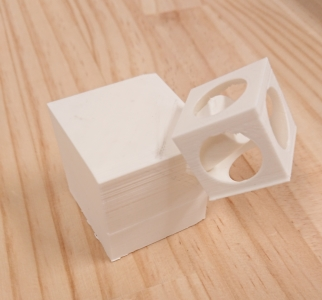
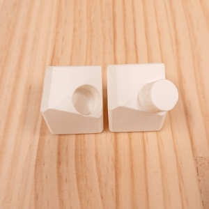
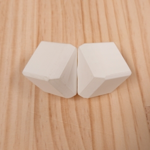
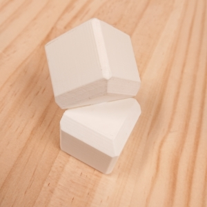
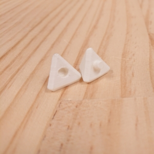
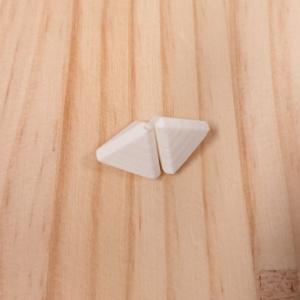

3年 10月
-先生のアドバイス-
調査は進めつつ、１ヶ月に２個ずつぐらい製品を作っていったほうがいいという意見からおもちゃの役割などを深く考えずに製品づくりを行っていくことに決めた
ー10/1-10/6ー
この週はおもちゃ売り場やお母さんにインタビューなどの調査は行えなかったが、製品づくりを行った
今まで、おもちゃの役割や将来どんな風に使えればいいなどを考えすぎて何も思いつかなかったため、あえて何も考えずに製品づくりを行った
製品試作
今までの積み木と言ったら直方体や立方体、円柱などのものを積み重ねているイメージがあったが、
最近の積み木は動物や恐竜などの形をしており、バランスを取りながら積み上げることに重視したものが出てきている
バランスもとれ、従来のように積み重ねることができる形の積み木を作りたいと考えたときに分子モデルセットを思い出し、この組み立て方を利用できないかと思い試作を行った
1つ目

1つ目の試作は立方体に円柱を取り付けただけと、はめ込む穴も適当であったため、円柱にひっかけるだけになってしまった
次の試作ではしっかりはめ込むことができるようにする
2つ目
  
おもちゃなら角は取れていたほうがいいと思い、面取りをした形にした
写真ではしっかりはまっているが、データを作った時に穴と円柱のサイズを一緒にしてしまい、削って調整を行ったため、次に作る時はサイズに注意しなければならない
おもちゃのサイズを考えるときに子供が口の中に入れられないようなことを意識したが、一般的なおもちゃのサイズを調べていなかったため、おもちゃ売り場を見に行った時にし調べてみる
3つ目

2つ目に試作したものは立方体だったので、四面体のものをつくってみた